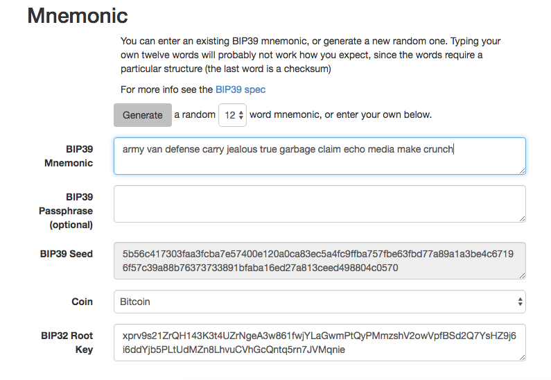
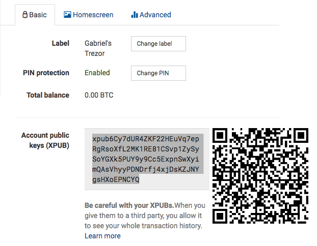

Wallets
The word "wallet" is used to describe a few different things in bitcoin.
At a high level, a wallet is an application that serves as the primary user interface. The wallet controls access to a user’s money, managing keys and addresses, tracking the balance, and creating and signing transactions.
More narrowly, from a programmer’s perspective, the word "wallet" refers to the data structure used to store and manage a user’s keys.
In this chapter we will look at the second meaning, where wallets are containers for private keys, usually implemented as structured files or simple databases.
Wallet Technology Overview
In this section we summarize the various technologies used to construct user-friendly, secure, and flexible bitcoin wallets.
A common misconception about bitcoin is that bitcoin wallets contain bitcoin. In fact, the wallet contains only keys. The "coins" are recorded in the blockchain on the bitcoin network. Users control the coins on the network by signing transactions with the keys in their wallets. In a sense, a bitcoin wallet is a keychain.
|
Tip
|
Bitcoin wallets contain keys, not coins. Each user has a wallet containing keys. Wallets are really keychains containing pairs of private/public keys (see [private_public_keys]). Users sign transactions with the keys, thereby proving they own the transaction outputs (their coins). The coins are stored on the blockchain in the form of transaction outputs (often noted as vout or txout). |
There are two primary types of wallets, distinguished by whether the keys they contain are related to each other or not.
The first type is a nondeterministic wallet, where each key is independently generated from a random number. The keys are not related to each other. This type of wallet is also known as a JBOK wallet from the phrase "Just a Bunch Of Keys."
The second type of wallet is a deterministic wallet, where all the keys are derived from a single master key, known as the seed. All the keys in this type of wallet are related to each other and can be generated again if one has the original seed. There are a number of different key derivation methods used in deterministic wallets. The most commonly used derivation method uses a tree-like structure and is known as a hierarchical deterministic or HD wallet.
Deterministic wallets are initialized from a seed. To make these easier to use, seeds are encoded as English words, also known as mnemonic code words.
The next few sections introduce each of these technologies at a high level.
Nondeterministic (Random) Wallets
In the first bitcoin wallet (now called Bitcoin Core), wallets were collections of randomly generated private keys. For example, the original Bitcoin Core client pregenerates 100 random private keys when first started and generates more keys as needed, using each key only once. Such wallets are being replaced with deterministic wallets because they are cumbersome to manage, back up, and import. The disadvantage of random keys is that if you generate many of them you must keep copies of all of them, meaning that the wallet must be backed up frequently. Each key must be backed up, or the funds it controls are irrevocably lost if the wallet becomes inaccessible. This conflicts directly with the principle of avoiding address reuse, by using each bitcoin address for only one transaction. Address reuse reduces privacy by associating multiple transactions and addresses with each other. A Type-0 nondeterministic wallet is a poor choice of wallet, especially if you want to avoid address reuse because it means managing many keys, which creates the need for frequent backups. Although the Bitcoin Core client includes a Type-0 wallet, using this wallet is discouraged by developers of Bitcoin Core. Type-0 nondeterministic (random) wallet: a collection of randomly generated keys shows a nondeterministic wallet, containing a loose collection of random keys.
|
Tip
|
The use of nondeterministic wallets is discouraged for anything other than simple tests. They are simply too cumbersome to back up and use. Instead, use an industry-standard–based HD wallet with a mnemonic seed for backup. |
Figure 1. Type-0 nondeterministic (random) wallet: a collection of randomly generated keys
Deterministic (Seeded) Wallets
Deterministic, or "seeded," wallets are wallets that contain private keys that are all derived from a common seed, through the use of a one-way hash function. The seed is a randomly generated number that is combined with other data, such as an index number or "chain code" (see HD Wallets (BIP-32/BIP-44)) to derive the private keys. In a deterministic wallet, the seed is sufficient to recover all the derived keys, and therefore a single backup at creation time is sufficient. The seed is also sufficient for a wallet export or import, allowing for easy migration of all the user’s keys between different wallet implementations. Type-1 deterministic (seeded) wallet: a deterministic sequence of keys derived from a seed shows a logical diagram of a deterministic wallet.

Figure 2. Type-1 deterministic (seeded) wallet: a deterministic sequence of keys derived from a seed
HD Wallets (BIP-32/BIP-44)
Deterministic wallets were developed to make it easy to derive many keys from a single "seed." The most advanced form of deterministic wallets is the HD wallet defined by the BIP-32 standard. HD wallets contain keys derived in a tree structure, such that a parent key can derive a sequence of children keys, each of which can derive a sequence of grandchildren keys, and so on, to an infinite depth. This tree structure is illustrated in Type-2 HD wallet: a tree of keys generated from a single seed.

Figure 3. Type-2 HD wallet: a tree of keys generated from a single seed
HD wallets offer two major advantages over random (nondeterministic) keys. First, the tree structure can be used to express additional organizational meaning, such as when a specific branch of subkeys is used to receive incoming payments and a different branch is used to receive change from outgoing payments. Branches of keys can also be used in corporate settings, allocating different branches to departments, subsidiaries, specific functions, or accounting categories.
The second advantage of HD wallets is that users can create a sequence of public keys without having access to the corresponding private keys. This allows HD wallets to be used on an insecure server or in a receive-only capacity, issuing a different public key for each transaction. The public keys do not need to be preloaded or derived in advance, yet the server doesn’t have the private keys that can spend the funds.
Seeds and Mnemonic Codes (BIP-39)
HD wallets are a very powerful mechanism for managing many keys and addresses. They are even more useful if they are combined with a standardized way of creating seeds from a sequence of English words that are easy to transcribe, export, and import across wallets. This is known as a mnemonic and the standard is defined by BIP-39. Today, most bitcoin wallets (as well as wallets for other cryptocurrencies) use this standard and can import and export seeds for backup and recovery using interoperable mnemonics.
Let’s look at this from a practical perspective. Which of the following seeds is easier to transcribe, record on paper, read without error, export, and import into another wallet?
A seed for a deterministic wallet, in hex
0C1E24E5917779D297E14D45F14E1A1A
A seed for a deterministic wallet, from a 12-word mnemonic
army van defense carry jealous true garbage claim echo media make crunch
Wallet Best Practices
As bitcoin wallet technology has matured, certain common industry standards have emerged that make bitcoin wallets broadly interoperable, easy to use, secure, and flexible. These common standards are:
-
Mnemonic code words, based on BIP-39
-
HD wallets, based on BIP-32
-
Multipurpose HD wallet structure, based on BIP-43
-
Multicurrency and multiaccount wallets, based on BIP-44
These standards may change or may become obsolete by future developments, but for now they form a set of interlocking technologies that have become the de facto wallet standard for bitcoin.
The standards have been adopted by a broad range of software and hardware bitcoin wallets, making all these wallets interoperable. A user can export a mnemonic generated on one of these wallets and import it in another wallet, recovering all transactions, keys, and addresses.
Some example of software wallets supporting these standards include (listed alphabetically) Breadwallet, Copay, Multibit HD, and Mycelium. Examples of hardware wallets supporting these standards include (listed alphabetically) Keepkey, Ledger, and Trezor.
The following sections examine each of these technologies in detail.
|
Tip
|
If you are implementing a bitcoin wallet, it should be built as a HD wallet, with a seed encoded as mnemonic code for backup, following the BIP-32, BIP-39, BIP-43, and BIP-44 standards, as described in the following sections. |
Using a Bitcoin Wallet
In [user-stories] we introduced Gabriel, an enterprising young teenager in Rio de Janeiro, who is running a simple web store that sells bitcoin-branded t-shirts, coffee mugs, and stickers.
Gabriel uses a Trezor bitcoin hardware wallet (A Trezor device: a bitcoin HD wallet in hardware) to securely manage his bitcoin. The Trezor is a simple USB device with two buttons that stores keys (in the form of an HD wallet) and signs transactions. Trezor wallets implement all the industry standards discussed in this chapter, so Gabriel is not reliant on any proprietary technology or single vendor solution.
Figure 4. A Trezor device: a bitcoin HD wallet in hardware
When Gabriel used the Trezor for the first time, the device generated a mnemonic and seed from a built-in hardware random number generator. During this initialization phase, the wallet displayed a numbered sequence of words, one by one, on the screen (see Trezor displaying one of the mnemonic words).

Figure 5. Trezor displaying one of the mnemonic words
By writing down this mnemonic, Gabriel created a backup (see Gabriel’s paper backup of the mnemonic) that can be used for recovery in the case of loss or damage to the Trezor device. This mnemonic can be used for recovery in a new Trezor or in any one of the many compatible software or hardware wallets. Note that the sequence of words is important, so mnemonic paper backups have numbered spaces for each word. Gabriel had to carefully record each word in the numbered space to preserve the correct sequence.
1. |
army |
7. |
garbage |
2. |
van |
8. |
claim |
3. |
defense |
9. |
echo |
4. |
carry |
10. |
media |
5. |
jealous |
11. |
make |
6. |
true |
12. |
crunch |
|
Note
|
A 12-word mnemonic is shown in Gabriel’s paper backup of the mnemonic, for simplicity. In fact, most hardware wallets generate a more secure 24-word mnemonic. The mnemonic is used in exactly the same way, regardless of length. |
For the first implementation of his web store, Gabriel uses a single bitcoin address, generated on his Trezor device. This single address is used by all customers for all orders. As we will see, this approach has some drawbacks and can be improved upon with an HD wallet.
Wallet Technology Details
Let’s now examine each of the important industry standards that are used by many bitcoin wallets in detail.
Mnemonic Code Words (BIP-39)
Mnemonic code words are word sequences that represent (encode) a random number used as a seed to derive a deterministic wallet. The sequence of words is sufficient to re-create the seed and from there re-create the wallet and all the derived keys. A wallet application that implements deterministic wallets with mnemonic words will show the user a sequence of 12 to 24 words when first creating a wallet. That sequence of words is the wallet backup and can be used to recover and re-create all the keys in the same or any compatible wallet application. Mnemonic words make it easier for users to back up wallets because they are easy to read and correctly transcribe, as compared to a random sequence of numbers.
|
Tip
|
Mnemonic words are often confused with "brainwallets." They are not the same. The primary difference is that a brainwallet consists of words chosen by the user, whereas mnemonic words are created randomly by the wallet and presented to the user. This important difference makes mnemonic words much more secure, because humans are very poor sources of randomness. |
Mnemonic codes are defined in BIP-39 (see [appdxbitcoinimpproposals]). Note that BIP-39 is one implementation of a mnemonic code standard. There is a different standard, with a different set of words, used by the Electrum wallet and predating BIP-39. BIP-39 was proposed by the company behind the Trezor hardware wallet and is incompatible with Electrum’s implementation. However, BIP-39 has now achieved broad industry support across dozens of interoperable implementations and should be considered the de facto industry standard.
BIP-39 defines the creation of a mnemonic code and seed, which we describe here in nine steps. For clarity, the process is split into two parts: steps 1 through 6 are shown in Generating mnemonic words and steps 7 through 9 are shown in From mnemonic to seed.
Generating mnemonic words
Mnemonic words are generated automatically by the wallet using the standardized process defined in BIP-39. The wallet starts from a source of entropy, adds a checksum, and then maps the entropy to a word list:
-
Create a random sequence (entropy) of 128 to 256 bits.
-
Create a checksum of the random sequence by taking the first (entropy-length/32) bits of its SHA256 hash.
-
Add the checksum to the end of the random sequence.
-
Split the result into 11-bit length segments.
-
Map each 11-bit value to a word from the predefined dictionary of 2048 words.
-
The mnemonic code is the sequence of words.
Generating entropy and encoding as mnemonic words shows how entropy is used to generate mnemonic words.

Figure 6. Generating entropy and encoding as mnemonic words
Mnemonic codes: entropy and word length shows the relationship between the size of the entropy data and the length of mnemonic codes in words.
| Entropy (bits) | Checksum (bits) | Entropy + checksum (bits) | Mnemonic length (words) |
|---|---|---|---|
128 |
4 |
132 |
12 |
160 |
5 |
165 |
15 |
192 |
6 |
198 |
18 |
224 |
7 |
231 |
21 |
256 |
8 |
264 |
24 |
From mnemonic to seed
The mnemonic words represent entropy with a length of 128 to 256 bits. The entropy is then used to derive a longer (512-bit) seed through the use of the key-stretching function PBKDF2. The seed produced is then used to build a deterministic wallet and derive its keys.
The key-stretching function takes two parameters: the mnemonic and a salt. The purpose of a salt in a key-stretching function is to make it difficult to build a lookup table enabling a brute-force attack. In the BIP-39 standard, the salt has another purpose—it allows the introduction of a passphrase that serves as an additional security factor protecting the seed, as we will describe in more detail in Optional passphrase in BIP-39.
The process described in steps 7 through 9 continues from the process described previously in Generating mnemonic words:
- The first parameter to the PBKDF2 key-stretching function is the mnemonic produced from step 6.
- The second parameter to the PBKDF2 key-stretching function is a salt. The salt is composed of the string constant "
mnemonic" concatenated with an optional user-supplied passphrase string. - PBKDF2 stretches the mnemonic and salt parameters using 2048 rounds of hashing with the HMAC-SHA512 algorithm, producing a 512-bit value as its final output. That 512-bit value is the seed.
From mnemonic to seed shows how a mnemonic is used to generate a seed.

Figure 7. From mnemonic to seed
|
Tip
|
The key-stretching function, with its 2048 rounds of hashing, is a very effective protection against brute-force attacks against the mnemonic or the passphrase. It makes it extremely costly (in computation) to try more than a few thousand passphrase and mnemonic combinations, while the number of possible derived seeds is vast (2512). |
Tables #mnemonic_128_no_pass, #mnemonic_128_w_pass, and #mnemonic_256_no_pass show some examples of mnemonic codes and the seeds they produce (without any passphrase).
Entropy input (128 bits) |
0c1e24e5917779d297e14d45f14e1a1a |
|---|---|
Mnemonic (12 words) |
army van defense carry jealous true garbage claim echo media make crunch |
Passphrase |
(none) |
Seed (512 bits) |
5b56c417303faa3fcba7e57400e120a0ca83ec5a4fc9ffba757fbe63fbd77a89a1a3be4c67196f57c39 a88b76373733891bfaba16ed27a813ceed498804c0570 |
Entropy input (128 bits) |
0c1e24e5917779d297e14d45f14e1a1a |
|---|---|
Mnemonic (12 words) |
army van defense carry jealous true garbage claim echo media make crunch |
Passphrase |
SuperDuperSecret |
Seed (512 bits) |
3b5df16df2157104cfdd22830162a5e170c0161653e3afe6c88defeefb0818c793dbb28ab3ab091897d0 715861dc8a18358f80b79d49acf64142ae57037d1d54 |
Entropy input (256 bits) |
2041546864449caff939d32d574753fe684d3c947c3346713dd8423e74abcf8c |
|---|---|
Mnemonic (24 words) |
cake apple borrow silk endorse fitness top denial coil riot stay wolf luggage oxygen faint major edit measure invite love trap field dilemma oblige |
Passphrase |
(none) |
Seed (512 bits) |
3269bce2674acbd188d4f120072b13b088a0ecf87c6e4cae41657a0bb78f5315b33b3a04356e53d062e5 5f1e0deaa082df8d487381379df848a6ad7e98798404 |
Optional passphrase in BIP-39
The BIP-39 standard allows the use of an optional passphrase in the derivation of the seed. If no passphrase is used, the mnemonic is stretched with a salt consisting of the constant string "mnemonic", producing a specific 512-bit seed from any given mnemonic. If a passphrase is used, the stretching function produces a different seed from that same mnemonic. In fact, given a single mnemonic, every possible passphrase leads to a different seed. Essentially, there is no "wrong" passphrase. All passphrases are valid and they all lead to different seeds, forming a vast set of possible uninitialized wallets. The set of possible wallets is so large (2512) that there is no practical possibility of brute-forcing or accidentally guessing one that is in use.
|
Tip
|
There are no "wrong" passphrases in BIP-39. Every passphrase leads to some wallet, which unless previously used will be empty. |
The optional passphrase creates two important features:
-
A second factor (something memorized) that makes a mnemonic useless on its own, protecting mnemonic backups from compromise by a thief.
-
A form of plausible deniability or "duress wallet," where a chosen passphrase leads to a wallet with a small amount of funds used to distract an attacker from the "real" wallet that contains the majority of funds.
However, it is important to note that the use of a passphrase also introduces the risk of loss:
-
If the wallet owner is incapacitated or dead and no one else knows the passphrase, the seed is useless and all the funds stored in the wallet are lost forever.
-
Conversely, if the owner backs up the passphrase in the same place as the seed, it defeats the purpose of a second factor.
While passphrases are very useful, they should only be used in combination with a carefully planned process for backup and recovery, considering the possibility of surviving the owner and allowing his or her family to recover the cryptocurrency estate.
Working with mnemonic codes
BIP-39 is implemented as a library in many different programming languages:
- python-mnemonic
-
The reference implementation of the standard by the SatoshiLabs team that proposed BIP-39, in Python
- bitcoinjs/bip39
-
An implementation of BIP-39, as part of the popular bitcoinJS framework, in JavaScript
- libbitcoin/mnemonic
-
An implementation of BIP-39, as part of the popular Libbitcoin framework, in C++
There is also a BIP-39 generator implemented in a standalone webpage, which is extremely useful for testing and experimentation. A BIP-39 generator as a standalone web page shows a standalone web page that generates mnemonics, seeds, and extended private keys.

Figure 8. A BIP-39 generator as a standalone web page
The page (https://iancoleman.github.io/bip39/) can be used offline in a browser, or accessed online.
Creating an HD Wallet from the Seed
HD wallets are created from a single root seed, which is a 128-, 256-, or 512-bit random number. Most commonly, this seed is generated from a mnemonic as detailed in the previous section.
Every key in the HD wallet is deterministically derived from this root seed, which makes it possible to re-create the entire HD wallet from that seed in any compatible HD wallet. This makes it easy to back up, restore, export, and import HD wallets containing thousands or even millions of keys by simply transferring only the mnemonic that the root seed is derived from.
The process of creating the master keys and master chain code for an HD wallet is shown in Creating master keys and chain code from a root seed.

Figure 9. Creating master keys and chain code from a root seed
The root seed is input into the HMAC-SHA512 algorithm and the resulting hash is used to create a master private key (m) and a master chain code (c).
The master private key (m) then generates a corresponding master public key (M) using the normal elliptic curve multiplication process m * G that we saw in [pubkey].
The chain code (c) is used to introduce entropy in the function that creates child keys from parent keys, as we will see in the next section.
Private child key derivation
HD wallets use a child key derivation (CKD) function to derive child keys from parent keys.
The child key derivation functions are based on a one-way hash function that combines:
-
A parent private or public key (ECDSA uncompressed key)
-
A seed called a chain code (256 bits)
-
An index number (32 bits)
The chain code is used to introduce deterministic random data to the process, so that knowing the index and a child key is not sufficient to derive other child keys. Knowing a child key does not make it possible to find its siblings, unless you also have the chain code. The initial chain code seed (at the root of the tree) is made from the seed, while subsequent child chain codes are derived from each parent chain code.
These three items (parent key, chain code, and index) are combined and hashed to generate children keys, as follows.
The parent public key, chain code, and the index number are combined and hashed with the HMAC-SHA512 algorithm to produce a 512-bit hash. This 512-bit hash is split into two 256-bit halves. The right-half 256 bits of the hash output become the chain code for the child. The left-half 256 bits of the hash are added to the parent private key to produce the child private key. In Extending a parent private key to create a child private key, we see this illustrated with the index set to 0 to produce the "zero" (first by index) child of the parent.

Figure 10. Extending a parent private key to create a child private key
Changing the index allows us to extend the parent and create the other children in the sequence, e.g., Child 0, Child 1, Child 2, etc. Each parent key can have 2,147,483,647 (231) children (231 is half of the entire 232 range available because the other half is reserved for a special type of derivation we will talk about later in this chapter).
Repeating the process one level down the tree, each child can in turn become a parent and create its own children, in an infinite number of generations.
Using derived child keys
Child private keys are indistinguishable from nondeterministic (random) keys. Because the derivation function is a one-way function, the child key cannot be used to find the parent key. The child key also cannot be used to find any siblings. If you have the nth child, you cannot find its siblings, such as the n–1 child or the n+1 child, or any other children that are part of the sequence. Only the parent key and chain code can derive all the children. Without the child chain code, the child key cannot be used to derive any grandchildren either. You need both the child private key and the child chain code to start a new branch and derive grandchildren.
So what can the child private key be used for on its own? It can be used to make a public key and a bitcoin address. Then, it can be used to sign transactions to spend anything paid to that address.
|
Tip
|
A child private key, the corresponding public key, and the bitcoin address are all indistinguishable from keys and addresses created randomly. The fact that they are part of a sequence is not visible outside of the HD wallet function that created them. Once created, they operate exactly as "normal" keys. |
Extended keys
As we saw earlier, the key derivation function can be used to create children at any level of the tree, based on the three inputs: a key, a chain code, and the index of the desired child. The two essential ingredients are the key and chain code, and combined these are called an extended key. The term "extended key" could also be thought of as "extensible key" because such a key can be used to derive children.
Extended keys are stored and represented simply as the concatenation of the 256-bit key and 256-bit chain code into a 512-bit sequence. There are two types of extended keys. An extended private key is the combination of a private key and chain code and can be used to derive child private keys (and from them, child public keys). An extended public key is a public key and chain code, which can be used to create child public keys (public only), as described in [public_key_derivation].
Think of an extended key as the root of a branch in the tree structure of the HD wallet. With the root of the branch, you can derive the rest of the branch. The extended private key can create a complete branch, whereas the extended public key can only create a branch of public keys.
|
Tip
|
An extended key consists of a private or public key and chain code. An extended key can create children, generating its own branch in the tree structure. Sharing an extended key gives access to the entire branch. |
Extended keys are encoded using Base58Check, to easily export and import between different BIP-32–compatible wallets. The Base58Check coding for extended keys uses a special version number that results in the prefix "xprv" and "xpub" when encoded in Base58 characters to make them easily recognizable. Because the extended key is 512 or 513 bits, it is also much longer than other Base58Check-encoded strings we have seen previously.
Here’s an example of an extended private key, encoded in Base58Check:
xprv9tyUQV64JT5qs3RSTJkXCWKMyUgoQp7F3hA1xzG6ZGu6u6Q9VMNjGr67Lctvy5P8oyaYAL9CAWrUE9i6GoNMKUga5biW6Hx4tws2six3b9c
Here’s the corresponding extended public key, encoded in Base58Check:
xpub67xpozcx8pe95XVuZLHXZeG6XWXHpGq6Qv5cmNfi7cS5mtjJ2tgypeQbBs2UAR6KECeeMVKZBPLrtJunSDMstweyLXhRgPxdp14sk9tJPW9
Public child key derivation
As mentioned previously, a very useful characteristic of HD wallets is the ability to derive public child keys from public parent keys, without having the private keys. This gives us two ways to derive a child public key: either from the child private key, or directly from the parent public key.
An extended public key can be used, therefore, to derive all of the public keys (and only the public keys) in that branch of the HD wallet structure.
This shortcut can be used to create very secure public key–only deployments where a server or application has a copy of an extended public key and no private keys whatsoever. That kind of deployment can produce an infinite number of public keys and bitcoin addresses, but cannot spend any of the money sent to those addresses. Meanwhile, on another, more secure server, the extended private key can derive all the corresponding private keys to sign transactions and spend the money.
One common application of this solution is to install an extended public key on a web server that serves an ecommerce application. The web server can use the public key derivation function to create a new bitcoin address for every transaction (e.g., for a customer shopping cart). The web server will not have any private keys that would be vulnerable to theft. Without HD wallets, the only way to do this is to generate thousands of bitcoin addresses on a separate secure server and then preload them on the ecommerce server. That approach is cumbersome and requires constant maintenance to ensure that the ecommerce server doesn’t "run out" of keys.
Another common application of this solution is for cold-storage or hardware wallets. In that scenario, the extended private key can be stored on a paper wallet or hardware device (such as a Trezor hardware wallet), while the extended public key can be kept online. The user can create "receive" addresses at will, while the private keys are safely stored offline. To spend the funds, the user can use the extended private key on an offline signing bitcoin client or sign transactions on the hardware wallet device (e.g., Trezor). Extending a parent public key to create a child public key illustrates the mechanism for extending a parent public key to derive child public keys.

Figure 11. Extending a parent public key to create a child public key
Using an Extended Public Key on a Web Store
Let’s see how HD wallets are used by continuing our story with Gabriel’s web store.
Gabriel first set up his web store as a hobby, based on a simple hosted Wordpress page. His store was quite basic with only a few pages and an order form with a single bitcoin address.
Gabriel used the first bitcoin address generated by his Trezor device as the main bitcoin address for his store. This way, all incoming payments would be paid to an address controlled by his Trezor hardware wallet.
Customers would submit an order using the form and send payment to Gabriel’s published bitcoin address, triggering an email with the order details for Gabriel to process. With just a few orders each week, this system worked well enough.
However, the little web store became quite successful and attracted many orders from the local community. Soon, Gabriel was overwhelmed. With all the orders paying the same address, it became difficult to correctly match orders and transactions, especially when multiple orders for the same amount came in close together.
Gabriel’s HD wallet offers a much better solution through the ability to derive public child keys without knowing the private keys. Gabriel can load an extended public key (xpub) on his website, which can be used to derive a unique address for every customer order. Gabriel can spend the funds from his Trezor, but the xpub loaded on the website can only generate addresses and receive funds. This feature of HD wallets is a great security feature. Gabriel’s website does not contain any private keys and therefore does not need high levels of security.
To export the xpub, Gabriel uses the web-based software in conjunction with the Trezor hardware wallet. The Trezor device must be plugged in for the public keys to be exported. Note that hardware wallets will never export private keys—those always remain on the device. Exporting an xpub from a Trezor hardware wallet shows the web interface Gabriel uses to export the xpub.

Figure 12. Exporting an xpub from a Trezor hardware wallet
Gabriel copies the xpub to his web store’s bitcoin shop software. He uses Mycelium Gear, which is an open source web-store plugin for a variety of web hosting and content platforms. Mycelium Gear uses the xpub to generate a unique address for every purchase.
Hardened child key derivation
The ability to derive a branch of public keys from an xpub is very useful, but it comes with a potential risk. Access to an xpub does not give access to child private keys. However, because the xpub contains the chain code, if a child private key is known, or somehow leaked, it can be used with the chain code to derive all the other child private keys. A single leaked child private key, together with a parent chain code, reveals all the private keys of all the children. Worse, the child private key together with a parent chain code can be used to deduce the parent private key.
To counter this risk, HD wallets use an alternative derivation function called hardened derivation, which "breaks" the relationship between parent public key and child chain code. The hardened derivation function uses the parent private key to derive the child chain code, instead of the parent public key. This creates a "firewall" in the parent/child sequence, with a chain code that cannot be used to compromise a parent or sibling private key. The hardened derivation function looks almost identical to the normal child private key derivation, except that the parent private key is used as input to the hash function, instead of the parent public key, as shown in the diagram in Hardened derivation of a child key; omits the parent public key.

Figure 13. Hardened derivation of a child key; omits the parent public key
When the hardened private derivation function is used, the resulting child private key and chain code are completely different from what would result from the normal derivation function. The resulting "branch" of keys can be used to produce extended public keys that are not vulnerable, because the chain code they contain cannot be exploited to reveal any private keys. Hardened derivation is therefore used to create a "gap" in the tree above the level where extended public keys are used.
In simple terms, if you want to use the convenience of an xpub to derive branches of public keys, without exposing yourself to the risk of a leaked chain code, you should derive it from a hardened parent, rather than a normal parent. As a best practice, the level-1 children of the master keys are always derived through the hardened derivation, to prevent compromise of the master keys.
Index numbers for normal and hardened derivation
The index number used in the derivation function is a 32-bit integer. To easily distinguish between keys derived through the normal derivation function versus keys derived through hardened derivation, this index number is split into two ranges. Index numbers between 0 and 231–1 (0x0 to 0x7FFFFFFF) are used only for normal derivation. Index numbers between 231 and 232–1 (0x80000000 to 0xFFFFFFFF) are used only for hardened derivation. Therefore, if the index number is less than 231, the child is normal, whereas if the index number is equal or above 231, the child is hardened.
To make the index number easier to read and display, the index number for hardened children is displayed starting from zero, but with a prime symbol. The first normal child key is therefore displayed as 0, whereas the first hardened child (index 0x80000000) is displayed as 0'. In sequence then, the second hardened key would have index 0x80000001 and would be displayed as 1', and so on. When you see an HD wallet index i', that means 231+i.
HD wallet key identifier (path)
Keys in an HD wallet are identified using a "path" naming convention, with each level of the tree separated by a slash (/) character (see HD wallet path examples). Private keys derived from the master private key start with "m." Public keys derived from the master public key start with "M." Therefore, the first child private key of the master private key is m/0. The first child public key is M/0. The second grandchild of the first child is m/0/1, and so on.
The "ancestry" of a key is read from right to left, until you reach the master key from which it was derived. For example, identifier m/x/y/z describes the key that is the z-th child of key m/x/y, which is the y-th child of key m/x, which is the x-th child of m.
| HD path | Key described |
|---|---|
m/0 |
The first (0) child private key from the master private key (m) |
m/0/0 |
The first grandchild private key from the first child (m/0) |
m/0'/0 |
The first normal grandchild from the first hardened child (m/0') |
m/1/0 |
The first grandchild private key from the second child (m/1) |
M/23/17/0/0 |
The first great-great-grandchild public key from the first great-grandchild from the 18th grandchild from the 24th child |
Navigating the HD wallet tree structure
The HD wallet tree structure offers tremendous flexibility. Each parent extended key can have 4 billion children: 2 billion normal children and 2 billion hardened children. Each of those children can have another 4 billion children, and so on. The tree can be as deep as you want, with an infinite number of generations. With all that flexibility, however, it becomes quite difficult to navigate this infinite tree. It is especially difficult to transfer HD wallets between implementations, because the possibilities for internal organization into branches and subbranches are endless.
Two BIPs offer a solution to this complexity by creating some proposed standards for the structure of HD wallet trees. BIP-43 proposes the use of the first hardened child index as a special identifier that signifies the "purpose" of the tree structure. Based on BIP-43, an HD wallet should use only one level-1 branch of the tree, with the index number identifying the structure and namespace of the rest of the tree by defining its purpose. For example, an HD wallet using only branch m/i'/ is intended to signify a specific purpose and that purpose is identified by index number "i."
Extending that specification, BIP-44 proposes a multiaccount structure as "purpose" number 44' under BIP-43. All HD wallets following the BIP-44 structure are identified by the fact that they only used one branch of the tree: m/44'/.
BIP-44 specifies the structure as consisting of five predefined tree levels:
m / purpose' / coin_type' / account' / change / address_index
The first-level "purpose" is always set to 44'. The second-level "coin_type" specifies the type of cryptocurrency coin, allowing for multicurrency HD wallets where each currency has its own subtree under the second level. There are three currencies defined for now: Bitcoin is m/44'/0', Bitcoin Testnet is m/44'/1', and Litecoin is m/44'/2'.
The third level of the tree is "account," which allows users to subdivide their wallets into separate logical subaccounts, for accounting or organizational purposes. For example, an HD wallet might contain two bitcoin "accounts": m/44'/0'/0' and m/44'/0'/1'. Each account is the root of its own subtree.
On the fourth level, "change," an HD wallet has two subtrees, one for creating receiving addresses and one for creating change addresses. Note that whereas the previous levels used hardened derivation, this level uses normal derivation. This is to allow this level of the tree to export extended public keys for use in a nonsecured environment. Usable addresses are derived by the HD wallet as children of the fourth level, making the fifth level of the tree the "address_index." For example, the third receiving address for bitcoin payments in the primary account would be M/44'/0'/0'/0/2. BIP-44 HD wallet structure examples shows a few more examples.
| HD path | Key described |
|---|---|
M/44'/0'/0'/0/2 |
The third receiving public key for the primary bitcoin account |
M/44'/0'/3'/1/14 |
The fifteenth change-address public key for the fourth bitcoin account |
m/44'/2'/0'/0/1 |
The second private key in the Litecoin main account, for signing transactions |